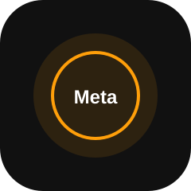
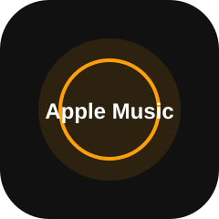
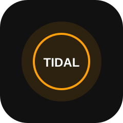
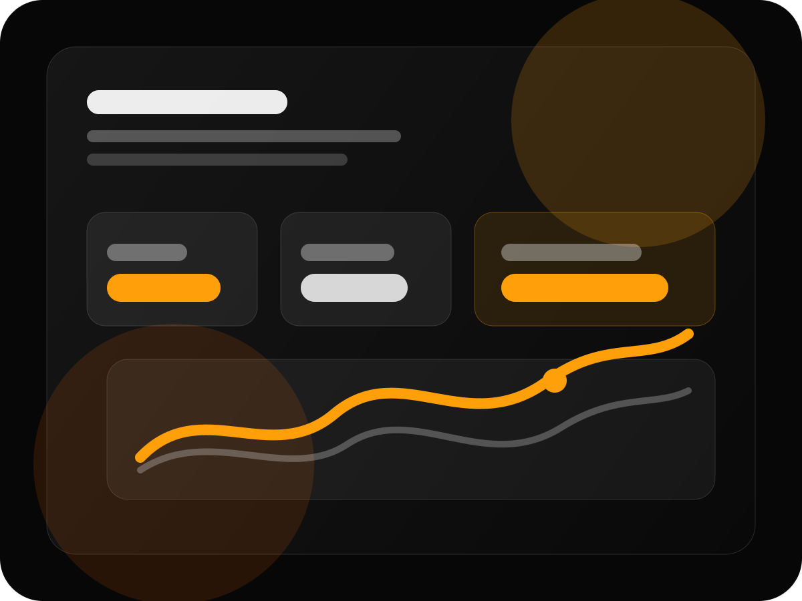

Especialización real
Gestionamos campañas pensadas para comportamiento musical: géneros, artistas similares, territorios, intención de escucha y consumo de contenido.
SpotifyYouTubeMeta AdsApple MusicTIDAL
Creamos campañas que generan audiencias reales, visualizaciones y crecimiento sostenible en Spotify, YouTube y redes sociales.
Pauta legítima · Segmentación musical · Optimización profesional · Sin bots
No trabajamos restaurantes, inmobiliarias ni ecommerce. Orange Bros está enfocado exclusivamente en campañas para artistas, sellos, managers y proyectos musicales.
Gestionamos campañas pensadas para comportamiento musical: géneros, artistas similares, territorios, intención de escucha y consumo de contenido.
Un artista no compra “ads”. Compra más oyentes, más reproducciones, más seguidores y más oportunidades de crecer.
Campañas para videoclips, lyric videos y visualizers.
SpotifyTráfico calificado para canciones, álbumes y perfiles.

Meta AdsInstagram y Facebook para lanzamientos, shows y contenido.

Apple MusicCampañas de tráfico y presencia para Apple Music.

TIDALAudiencias premium y campañas de lanzamiento.

Orange Bros combina estrategia, pauta digital y conocimiento de audiencias musicales para convertir lanzamientos en campañas medibles.
*Reemplazar por cifras reales del cliente antes de publicar.
La prueba social debe mostrar casos reales, aunque sean modestos. Los números reales venden más que promesas grandes.
Antes: 2,300 oyentes mensuales.
Después: 28,000 oyentes mensuales.
Antes: 4,000 vistas.
Después: 180,000 vistas.
Inversión: $500 USD.
Resultado: X reproducciones.
Analizamos tu Spotify, YouTube o campaña actual y te damos una recomendación inicial de plataforma, presupuesto y objetivo.
Los artistas aman ver números. Esta calculadora ayuda a convertir interés en conversación comercial.
Estimaciones referenciales. El rendimiento puede variar según plataforma, contenido, país, segmentación y comportamiento de la audiencia.
Simplificamos la decisión con una campaña recomendada para lanzamientos que necesitan alcance, tráfico y seguimiento profesional.
Ideal para artistas que quieren llevar un video o lanzamiento a fans potenciales de su género musical.
Además de tráfico pagado, el sitio ahora incluye páginas enfocadas en búsquedas orgánicas de artistas y managers.
Orange Bros trabaja con campañas publicitarias legítimas en plataformas oficiales. No utilizamos bots, granjas de reproducciones, tráfico artificial ni métodos que puedan comprometer la integridad de un proyecto musical.
Solicita una diagnóstico inicial y recibe una recomendación inicial para crecer en Spotify, YouTube o redes sociales.